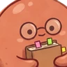

About the rough journeyWhat do people come to a bakery like this for that they can’t get at the supermarket?
Rough journey · Noor and MikaWho · stages they go through
ChooseOrderPick up
Morning regularsBrowse today’s breadOrder with an accountCollect at opening
Weekend pastry crowdBrowse the pastriesOrder by FridayCollect Saturday
The bakersTomorrow’s listBake to the listMark it collected
Priyaspeaking
TakeawaysReword
What I believe
People come for bread that’s still warm, and for being known.
Guidance to the team
Their usual loaf first, one tap away. Never ask for what we already know.